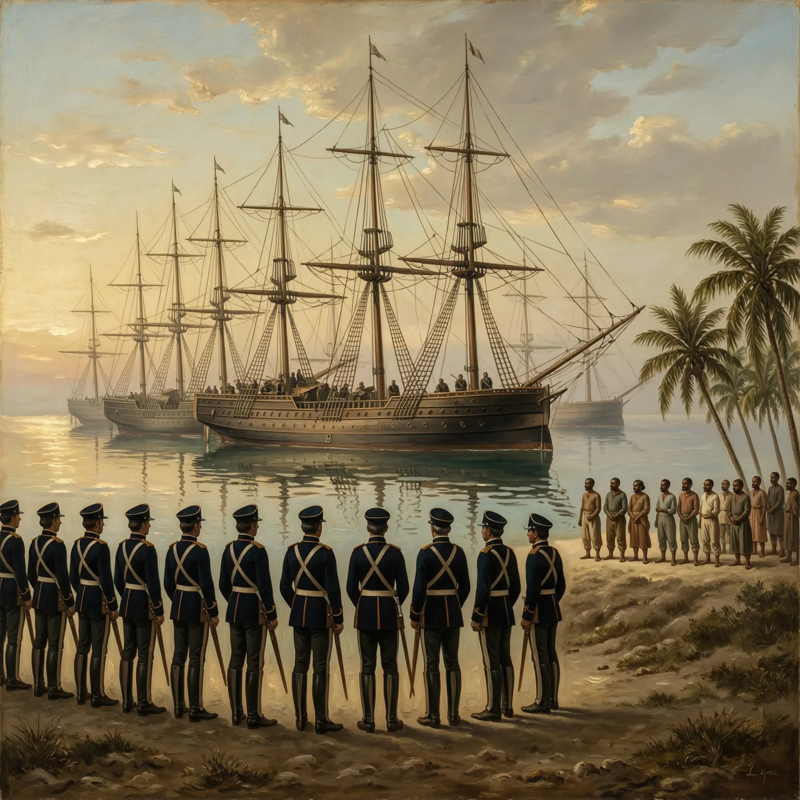

唯一成功的奴隶起义建国，独立却从1.5亿法郎赔款开始。

1825年，法国舰队驶抵海地锚地，目的不是重新征服，而是收账：以承认独立为条件，前宗主国向这个黑人共和国索取1.5亿金法郎，作为种植园主失去奴隶与土地的财产赔偿。二十多年前，正是这些种植园里的奴隶，击败了拿破仑派来的三万人远征军。
1791年，法属圣多明各的种植园奴隶起义，杜桑·卢维杜尔把松散的队伍整编成军，1794到1798年间先后击退入侵的西班牙与法国军队，1801年将全岛纳入自治。1802年，拿破仑派妹夫勒克莱尔率三万人远征，诱捕了杜桑；德萨林接手战局，法军深陷疫病与游击战，被迫撤出。1804年1月，《海地独立宣言》发表。
战场之外，法国握着另一样东西：列强承认的钥匙。1825年，查理十世颁布敕令，承认海地独立的前提，是向法国种植园主支付1.5亿金法郎的财产损失——说白了，是给被解放的奴隶和荒废的种植园定价。海地担心拒绝后法国再次动武，也怕继续被封锁，签了字。为了凑齐首期款，它向法国银行借款，本金之上又叠利息，一份赔款滚成了跨世纪的债务。
这笔债几乎掏空了新国家的预算，独立初期海地财政收入的大半要用于赔款和利息，修路办学长期缺钱。列强也在回避这个榜样：美国直到1862年才承认海地独立，顾虑主要来自国内的奴隶制。债主最终追到门口——1915年美军登陆海地，接管了这个国家的海关。1825年开出的账单，一直还到20世纪中叶。